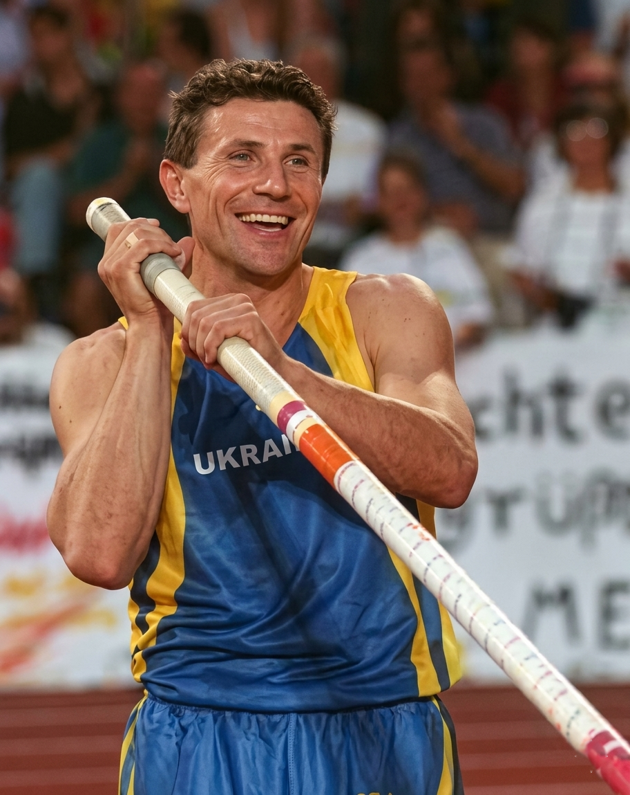

1. Historia del Atletismo
El atletismo es considerado el deporte organizado más antiguo del planeta. Sus orígenes se entrelazan con los albores de la humanidad, ya que correr, saltar y lanzar eran habilidades fundamentales para la supervivencia.

La primera referencia histórica documentada se remonta al año 776 a.C. en la antigua Grecia, coincidiendo con los primeros Juegos Olímpicos de la Antigüedad. En aquella época, la única prueba era una carrera de velocidad a lo largo de un estadio (unos 192 metros).
El deporte decayó tras la abolición de los juegos por parte del emperador romano Teodosio, pero resurgió con gran fuerza en la Inglaterra del siglo XIX. Con la celebración de los primeros Juegos Olímpicos de la era moderna en Atenas 1896, el atletismo se consolidó como la disciplina reina de los juegos. En 1912 se fundó la Federación Internacional de Atletismo Amateur (actualmente conocida como World Athletics), el organismo que regula el deporte hoy en día.
2. Grandes Bloques de Disciplinas
El atletismo no es un solo deporte, sino un conjunto complejo de pruebas que miden la fuerza, la resistencia, la velocidad y la técnica. Se dividen principalmente en tres grandes categorías:
A. Pruebas de Pista (Carreras)
- Velocidad: Carreras de 100m, 200m y 400m. Exigen una explosividad muscular máxima.
- Medio Fondo: Pruebas de 800m y 1500m que combinan velocidad táctica con resistencia.
- Fondo: Carreras de 5000m y 10,000m, además de la mítica Maratón (42.195 km) realizada en ruta.
- Vallas y Obstáculos: Carreras con barreras que los atletas deben sortear sin perder el ritmo (por ejemplo, 110m vallas o 3000m obstáculos).
- Relevos: Eventos por equipos (4x100m y 4x400m) donde se transfiere un testigo de madera o metal.

B. Pruebas de Campo (Concursos)
- Saltos: Salto de longitud, triple salto, salto de altura y salto con pértiga (garrocha).
- Lanzamientos: Lanzamiento de bala (peso), disco, martillo y jabalina. Exigen una tremenda potencia de torsión y coordinación.
C. Pruebas Combinadas y Marcha
- Pruebas Combinadas: El Decatlón (10 pruebas para hombres) y el Heptatlón (7 pruebas para mujeres) premian al atleta más completo tras varios días de competencia.
- Marcha Atlética: Carreras de larga distancia (habitualmente 20km y 35km) donde se exige mantener siempre un pie en contacto visual con el suelo.
3. Reglas Esenciales y Funcionamiento
Para asegurar una competencia justa, existen normativas internacionales muy estrictas que todo atleta debe cumplir:
| Aspecto | Regla Principal | Penalización / Consecuencia |
|---|---|---|
| Salida en Falso | Ningún atleta puede moverse antes de que suene el disparo del juez. | Descalificación inmediata automática. |
| Líneas de la Pista | En carreras de carriles asignados (como los 100m), no se puede pisar el carril vecino. | Descalificación si se obtiene una ventaja o se obstruye a otro corredor. |
| Intentos en Lanzamientos/Saltos | Los atletas disponen de un número limitado de intentos (usualmente entre 3 y 6). | Si pisan la línea límite, el intento se declara "Nulo". |
| Marcha Atlética | El atleta no puede perder el contacto con el suelo ni doblar la rodilla de la pierna de apoyo. | Acumulación de tarjetas amarillas que derivan en penalizaciones de tiempo o descalificación. |
4. Atletas Icónicos de la Historia
El atletismo ha forjado a leyendas que han llevado las capacidades físicas del ser humano a límites que antes se consideraban biológicamente imposibles:
Usain St. Leo Bolt
- Orígenes humildes en Sherwood Content: Usain nació el 21 de agosto de 1986 en Sherwood Content, un pequeño pueblo de la parroquia de Trelawny, en Jamaica.
Fue hijo de Wellesley y Jennifer Bolt, quienes gestionaban una modesta tienda de comestibles rural. Su infancia transcurrió en un entorno sencillo, donde pasaba las horas jugando al críquet y al fútbol en la calle junto a su hermano.
El deporte fue su pasión natural desde el primer momento. Aunque al principio su sueño era destacar en el críquet, sus entrenadores de la escuela primaria Waldensia notaron de inmediato su descomunal velocidad natural en las carreras de velocidad. Su talento era tan evidente que a los 14 años ya ganaba medallas en los campeonatos escolares nacionales, llamando la atención de entrenadores de élite que vieron en ese chico alto y algo descoordinado el potencial de una futura estrella del atletismo mundial. - El salto al escenario mundial: Fue en el Campeonato Mundial Junior de 2002, celebrado en Kingston, donde un joven Usain de solo 15 años sorprendió al mundo al ganar los 200 metros lisos ante su propio público, convirtiéndose en el campeón mundial junior más joven de la historia. Su mentor y entrenador definitivo, Glen Mills, lo guio pacientemente para corregir sus problemas de postura y escoliosis, transformando su imponente zancada en un arma de destrucción masiva sobre la pista. Dejó de ser solo una promesa caribeña para convertirse en una fuerza de la naturaleza indomable.
- Títulos clave: Campeón Mundial Junior (2002) y múltiples récords de categorías juveniles.
- Logros individuales: Primer atleta junior en bajar de los 20 segundos en los 200 metros netos.
- La era dorada y la velocidad histórica: En el verano de 2008, Usain Bolt llegó a los Juegos Olímpicos de Pekín listo para asaltar la inmortalidad. Su presentación en la pista del "Nido de Pájaro" colmado por miles de espectadores anticipaba un hito histórico sin precedentes en la velocidad.
En Pekín y posteriormente en Berlín, Bolt alcanzó su madurez física absoluta, protagonizando las exhibiciones de velocidad pura más impactantes que el deporte haya visto jamás, desafiando las leyes de la física con su característico gesto del "Rayo" (Lightning Bolt). Rompió todos los límites del cronómetro, corriendo a una velocidad media inalcanzable para cualquier ser humano.El Espectáculo de Pekín
2008Destrozó el récord mundial de los 100 metros lisos cronometrando 9.69 segundos, frenando y celebrando varios metros antes de cruzar la línea de meta con los brazos abiertos.
La Barrera Imposible de Berlín
2009Estableció los récords mundiales definitivos e históricos en el Campeonato Mundial de Berlín: 9.58 segundos en los 100 metros y unos estratosféricos 19.19 segundos en los 200 metros.
El Triplete del Relevo
2008 – 2012Lideró al implacable equipo de Jamaica para romper también el récord mundial del relevo 4x100 metros, consolidando la hegemonía total caribeña en el planeta.
Durante su glorioso reinado en las pistas, sumó múltiples galardones como el Premio Laureus al Mejor Deportista Mundial del Año (2009, 2010, 2013 y 2017).
 Berlín 2009: El momento exacto en que el cronómetro se detuvo en 9.58 segundos
Berlín 2009: El momento exacto en que el cronómetro se detuvo en 9.58 segundos - Nuevos retos, Londres, Río de Janeiro y Retiro
- ✔Juegos Olímpicos de Londres (2012): Buscando revalidar su corona, se mudó al escenario británico. Allí silenció las dudas previas ganando el oro en 100m, 200m y 4x100m, convirtiéndose en el primer atleta en defender con éxito ambos títulos de velocidad en citas olímpicas consecutivas.
 Inmortalizando la Corona en el Estadio Olímpico de Londres
Inmortalizando la Corona en el Estadio Olímpico de Londres- ✔El histórico "Triple-Triple" en Río (2016): Llegó a Brasil para consolidar un hito inalcanzable. Conquistó por tercera vez consecutiva las tres medallas de oro olímpicas en juego, completando una hazaña legendaria que selló para siempre su estatus de mito viviente antes de despedirse oficialmente de las pistas en 2017.
 El cierre perfecto: La última gran sonrisa del Rayo en Río de Janeiro
El cierre perfecto: La última gran sonrisa del Rayo en Río de Janeiro- ✔Incursión en el Fútbol Profesional (2018): En un sorpresivo giro tras dejar el atletismo, Bolt persiguió su viejo sueño de la infancia entrenando y llegando a debutar en partidos amistosos de fútbol profesional con el Central Coast Mariners de Australia, demostrando que su carisma y potencia física trascendían cualquier disciplina.
 La pasión continúa: Bolt expande sus límites en el terreno de juego
La pasión continúa: Bolt expande sus límites en el terreno de juego - Leyenda eterna del Deporte MundialCon sus espectaculares logros, Usain Bolt llevó al atletismo a la primera plana del entretenimiento global. Superó todas las presiones y exigencias físicas para alcanzar la cima absoluta y mantenerse sonriente en ella:
- ✔8 Medallas de Oro Olímpicas: Dominó de forma absoluta las citas de Pekín 2008, Londres 2012 y Río 2016 sin perder una sola final disputada.
- ✔11 Títulos Mundiales: Levantó la máxima presea en los campeonatos de Berlín, Daegu, Moscú y Pekín.
Actualmente, Usain Bolt ostenta los récords mundiales imbatibles de los 100 y 200 metros lisos, manteniéndose firmemente como el hombre más rápido de todos los tiempos.
Su trayectoria es el reflejo de una alegría caribeña inquebrantable, condiciones genéticas fuera de serie y una mentalidad competitiva implacable que revolucionó la historia del deporte para siempre. Orgullo de una nación: Pasión eterna por los colores de Jamaica
Orgullo de una nación: Pasión eterna por los colores de Jamaica


Frederick Carlton Lewis
- Orígenes humildes en Birmingham: Carl nació el 1 de julio de 1961 en Birmingham, Alabama.
Creció en el seno de una familia muy unida a la comunidad afroamericana y profundamente ligada al deporte; sus padres, William y Evelyn Lewis, eran entrenadores de atletismo y fundaron un club local para jóvenes atletas. Aunque de niño era de constitución baja y delgada comparado con sus hermanos, encontró en las pistas de arena y arcilla su propio espacio de expresión.
El atletismo fue su destino desde la infancia. Empezó a competir desde muy joven y, tras mudarse a Nueva Jersey, su progresión fue tan meteórica que llamó la atención de la Universidad de Houston. Dejar su hogar para mudarse a Texas bajo la tutela del legendario entrenador Tom Tellez fue un paso crucial y exigente, donde tuvo que pulir una técnica de salto y velocidad que lo transformaría en una fuerza dominante. - El salto al escenario mundial: Fue a principios de la década de 1980 cuando el nombre de Carl Lewis empezó a resonar con fuerza global. Su consagración definitiva llegó en el primer Campeonato Mundial de Atletismo en Helsinki 1983, donde un joven e impetuoso Lewis de 22 años conquistó tres medallas de oro, dejando boquiabiertos a los expertos del deporte. Su elegancia al correr y su zancada perfecta se convirtieron en su sello personal. Tom Tellez lo moldeó para coordinar su velocidad punta con una batida perfecta en el salto de longitud, convirtiéndolo no solo en un velocista temible, sino en el saltador más regular y peligroso del planeta.
- Títulos clave: 3 Medallas de oro en el Mundial de Helsinki (1983).
- Logros individuales: Dominio absoluto en las pruebas de 100 metros, 200 metros y salto de longitud.
- La era dorada y la rivalidad histórica: En el verano de 1984, Carl Lewis llegó a los Juegos Olímpicos de Los Ángeles con la enorme presión de emular la gesta histórica de Jesse Owens en 1936. Su presentación ante un Memorial Coliseum totalmente abarrotado anticipaba una de las mayores exhibiciones de la historia olímpica.
En Los Ángeles, y posteriormente en la intensa y polémica rivalidad con el canadiense Ben Johnson en Seúl 1988, Lewis alcanzó su madurez competitiva absoluta. Se convirtió en un fenómeno mediático global que llevó al atletismo a una dimensión profesional nunca antes vista, encadenando victorias consecutivas y desafiando los límites del rendimiento humano en múltiples disciplinas simultáneamente.La Hazaña de los Cuatro Oros
1984Igualó el mítico récord de Jesse Owens al ganar cuatro medallas de oro en una sola edición olímpica: 100m, 200m, salto de longitud y el relevo 4x100m.
El Drama y la Redención de Seúl
1988Tras la descalificación de Ben Johnson por dopaje, Lewis se adjudicó el oro en los 100 metros con récord mundial, además de revalidar su corona en salto de longitud.
La Carrera del Siglo en Tokio
1991Se coronó en el Mundial de Tokio al ganar los 100 metros lisos deteniendo el cronómetro en unos espectaculares 9.86 segundos, estableciendo un nuevo récord del mundo.
Durante su prolongado reinado en las pistas, fue nombrado repetidamente "Atleta del Año" por diversas federaciones mundiales y agencias de prestigio internacional.
 Los Ángeles 1984: El Cierre de una Hazaña Histórica e Inmortal
Los Ángeles 1984: El Cierre de una Hazaña Histórica e Inmortal - Nuevos retos, Barcelona, Atlanta y Legado Legendario
- ✔Juegos Olímpicos de Barcelona (1992): Demostrando que su vigencia seguía intacta, se mudó al escenario español. Allí conquistó su tercer oro consecutivo en salto de longitud superando a su gran rival Mike Powell, y lideró el relevo 4x100m para imponer un nuevo récord mundial.
 Inmortalizando la Gloria sobre el Foso de Barcelona
Inmortalizando la Gloria sobre el Foso de Barcelona- ✔El histórico tetracampeonato en Atlanta (1996): Llegó a su propio país para consolidar un hito casi inalcanzable. Con un salto legendario de 8.50 metros, conquistó por cuarta vez consecutiva la medalla de oro en salto de longitud, una hazaña que selló para siempre su estatus de mito olímpico viviente antes de su retiro oficial en 1997.
 El noveno oro: La última gran hazaña del Hijo del Viento en Atlanta
El noveno oro: La última gran hazaña del Hijo del Viento en Atlanta- ✔Reconocimiento Histórico del COI (1999): En un merecido homenaje a su trayectoria tras dejar las pistas, Lewis fue elegido por el Comité Olímpico Internacional como el "Atleta del Siglo", consolidando un impacto cultural y deportivo que trascendió las pistas de atletismo.
 La consagración eterna: Reconocido como el Atleta del Siglo XX
La consagración eterna: Reconocido como el Atleta del Siglo XX - Leyenda Inigualable del Atletismo MundialCon sus espectaculares logros, Carl Lewis llevó al olimpismo a la cúspide del reconocimiento global. Superó relevos generacionales, críticas y una exigencia física brutal para mantenerse en la cima durante casi dos décadas:
- ✔9 Medallas de Oro Olímpicas: Dominó de forma absoluta en las citas de Los Ángeles 1984, Seúl 1988, Barcelona 1992 y Atlanta 1996, sumando además una presea de plata.
- ✔8 Títulos Mundiales: Levantó la máxima presea en los campeonatos de Helsinki, Roma y Tokio a lo largo de su carrera.
Actualmente, Carl Lewis es recordado como uno de los poquísimos atletas en la historia en ganar la misma prueba individual en cuatro Juegos Olímpicos consecutivos.
Su carrera es el reflejo de una técnica perfecta, una longevidad deportiva fuera de serie y un hambre de gloria que revolucionó la historia del deporte aficionado hacia la era moderna. Orgullo de una nación: Pasión eterna por las barras y las estrellas
Orgullo de una nación: Pasión eterna por las barras y las estrellas


Eliud Kipchoge
- Orígenes humildes en Nandi: Eliud nació el 5 de noviembre de 1984 en Kapsisiywa, en el distrito de Nandi, Kenia.
Fue el menor de cuatro hermanos criados únicamente por su madre, una dedicada profesora de escuela primaria, tras la temprana muerte de su padre. Su infancia transcurrió en un entorno rural muy sencillo; de niño, corría varios kilómetros descalzo todos los días simplemente para llegar a su escuela y ayudaba a su familia transportando pesados galones de leche en bicicleta para venderlos en el mercado local.
El atletismo estuvo en sus raíces desde siempre. En los caminos de tierra de su aldea conoció a Patrick Sang, un exmedallista olímpico que se convirtió en su entrenador de toda la vida y figura paterna. Bajo su guía y en el austero campamento de entrenamiento en Kaptagat, Eliud forjó una disciplina de acero y una ética de trabajo espartana que marcarían el inicio de una de las trayectorias más admirables de la historia del fondismo mundial. - El salto al escenario mundial: Fue en agosto de 2003, durante el Campeonato Mundial de Atletismo en París, donde un joven Kipchoge de apenas 18 años sorprendió por completo al planeta. En una electrizante final de 5000 metros, derrotó en el último suspiro a dos titanes consagrados de la época: Hicham El Guerrouj y Kenenisa Bekele. Tras una exitosa carrera en las pistas que incluyó medallas olímpicas en Atenas y Pekín, tomó una decisión crucial junto a Patrick Sang: dar el salto definitivo al asfalto de las maratones de 42.195 kilómetros. En esta transición, Kipchoge evolucionó de ser un velocista de fondo a convertirse en la mente más brillante y metódica de las carreras de resistencia.
- Títulos clave: Campeón Mundial de 5000m (2003) y su primera victoria en maratón en Hamburgo (2013).
- Logros individuales: Dominio absoluto en los prestigiosos World Marathon Majors de Londres y Berlín.
- La era dorada y la velocidad histórica: En la última década, Kipchoge alcanzó su madurez física y mental absoluta, protagonizando una época dorada de dominio incuestionable en las maratones más exigentes del mundo. Con su icónico lema *"No human is limited"* (Ningún humano tiene límites), desafió las barreras biológicas de la resistencia humana.
En la mítica recta del Maratón de Berlín, Eliud destrozó los límites del cronómetro de forma consecutiva, promediando ritmos de carrera considerados imposibles para un ser humano. Su zancada fluida y su característica sonrisa en los momentos de máximo dolor se convirtieron en su sello de identidad universal en el asfalto.El Récord de Berlín
2018Estableció un récord mundial histórico en el Maratón de Berlín cronometrando 2:01:39, rebajando de forma descomunal la marca anterior por 78 segundos.
El Reto Humano Ineos 1:59
2019Hizo historia en Viena al convertirse en el primer y único ser humano en correr la distancia de una maratón en menos de dos horas, deteniendo el reloj en unos estratosféricos 1:59:40.
Superación Definitiva en Berlín
2022Regresó a las calles de la capital alemana para superar su propia marca perfecta, deteniendo el cronómetro oficial del mundo en unos increíbles 2:01:09.
Durante su glorioso reinado en la distancia reina, sumó múltiples galardones internacionales, incluyendo el prestigioso Premio Princesa de Asturias de los Deportes (2023).
 Viena 2019: El histórico momento en que el ser humano rompió la barrera de las dos horas
Viena 2019: El histórico momento en que el ser humano rompió la barrera de las dos horas - Nuevos retos, Río de Janeiro, Tokio y París
- ✔Juegos Olímpicos de Río (2016): Buscando la consagración olímpica definitiva en el asfalto, se mudó al escenario brasileño. Allí dictó una cátedra de estrategia bajo la lluvia para ganar su primera medalla de oro olímpica en maratón con total autoridad.
 Inmortalizando la Corona Olímpica en el Sambódromo de Río
Inmortalizando la Corona Olímpica en el Sambódromo de Río- ✔El bicampeonato en Tokio (2020): Volvió a la máxima cita deportiva en una edición complicada celebrada en Sapporo debido al calor extremo. A pesar de las difíciles condiciones físicas, se escapó en solitario para revalidar su oro olímpico, emulando a leyendas como Abebe Bikila.
 El rey del asfalto: Magia y autoridad pura en los Juegos Olímpicos de Tokio
El rey del asfalto: Magia y autoridad pura en los Juegos Olímpicos de Tokio- ✔La Leyenda en los Juegos de París (2024): En agosto de 2024, Kipchoge acudió a sus quintos Juegos Olímpicos en París para enfrentarse a uno de los recorridos más duros e históricos de la historia del olimpismo, demostrando que su nombre ya está grabado para siempre con letras de oro en el Olimpo del deporte mundial.
 La leyenda continúa: Kipchoge expande su legado en las calles de París
La leyenda continúa: Kipchoge expande su legado en las calles de París - Leyenda eterna del Deporte MundialCon sus espectaculares logros, Eliud Kipchoge llevó al atletismo de fondo a la primera plana del entretenimiento y la inspiración global. Superó todas las exigencias físicas y la edad para mantenerse en la cumbre absoluta con una humildad ejemplar:
- ✔4 Medallas Olímpicas: Consiguió preseas en Atenas 2004, Pekín 2008, Río 2016 y Tokio 2020, consolidando una longevidad deportiva inigualable.
- ✔11 Victorias en Grandes Maratones: Dominó de forma implacable las competitivas calles de los Majors de Londres, Berlín, Chicago y Tokio.
Actualmente, Eliud Kipchoge es considerado de forma unánime como el maratonista más grande de todos los tiempos.
Su carrera es el reflejo de una paz mental inquebrantable, una preparación física obsesiva basada en la vida sencilla del campamento keniano y un hambre de gloria que ha demostrado al mundo que los límites son solo mentales. Orgullo de una nación: Pasión eterna por los colores de Kenia
Orgullo de una nación: Pasión eterna por los colores de Kenia


Jacqueline Joyner-Kersee
- Orígenes humildes en East St. Louis: Jackie nació el 3 de marzo de 1962 en East St. Louis, Illinois.
Fue nombrada en honor a la primera dama Jacqueline Kennedy, con la esperanza de su familia de que lograra grandes cosas. Su infancia estuvo marcada por la pobreza extrema y la violencia del entorno; sus padres eran muy jóvenes y trabajaban incansablemente en empleos de bajos ingresos para sostener el hogar. Además, Jackie tuvo que lidiar desde muy pequeña con un asma severa, una condición física que amenazaba con alejarla de cualquier actividad de alto rendimiento.
El atletismo y el baloncesto fueron su salvación y refugio. Inspirada por un documental sobre la atleta Wilma Rudolph, Jackie pasaba horas entrenando en un centro comunitario local. Su talento natural era tan abrumador que pronto llamó la atención de las universidades, logrando una beca completa para la prestigiosa UCLA, donde no solo brilló en la pista, sino también como la base titular del equipo de baloncesto, superando la dolorosa pérdida de su madre durante su primer año universitario. - El salto al escenario mundial: En agosto de 1984, durante los Juegos Olímpicos de Los Ángeles, un mundo expectante vio nacer la leyenda de Jackie a nivel internacional. En el heptatlón, una de las pruebas más exigentes del deporte, se quedó a tan solo cinco puntos de la medalla de oro, logrando una reñida presea de plata. Bajo la tutela técnica de Bob Kersee, quien se convertiría en su entrenador y esposo, Jackie perfeccionó su técnica en el salto de longitud y optimizó su resistencia en las pruebas combinadas. En las pistas universitarias y los estadios olímpicos, se transformó de una joven promesa atlética a una máquina imparable de romper récords y acumular títulos.
- Títulos clave: Sus primeros oros mundiales en Roma (1987) tanto en Heptatlón como en Salto de Longitud.
- Logros individuales: Primera mujer en superar la barrera mítica de los 7,000 puntos en la disciplina del Heptatlón.
- La era dorada y la rivalidad histórica: En el verano de 1988, Jackie alcanzó su madurez física y competitiva absoluta, protagonizando exhibiciones soberbias ante sus rivales en los Juegos Olímpicos de Seúl. Su imponente presencia física y consistencia técnica anticipaban un dominio absoluto en el atletismo que pocas veces el mundo del deporte ha presenciado jamás.
En Seúl, Jackie destrozó todos los récords mundiales posibles, promediando marcas en saltos y velocidad inalcanzables. Mantuvo una rivalidad deportiva feroz con las mejores atletas de la Unión Soviética y Europa del Este, elevando el heptatlón femenino a un nivel de popularidad histórico y mediático sin precedentes.El Récord Mundial Imbatible
1988Estableció un récord mundial histórico de 7,291 puntos en el heptatlón de Seúl 1988, una marca estratosférica que sigue vigente en la actualidad.
El Doblete Dorado en Seúl
1988Consiguió dos medallas de oro consecutivas en los mismos Juegos, coronándose campeona absoluta en el heptatlón y en la final de salto de longitud.
La Consagración Definitiva
1992Se coronó bicampeona olímpica de forma consecutiva en Barcelona. Poco después, consolidó su posición como la atleta más laureada de la historia estadounidense.
Durante su gloriosa estancia en las pistas mundiales, sumó múltiples reconocimientos individuales y fue nombrada la "Atleta Femenina del Siglo" por la revista Sports Illustrated.
 Seúl 1988: El Cierre de una Exhibición Dorada e Inigualable
Seúl 1988: El Cierre de una Exhibición Dorada e Inigualable - Nuevos retos, Barcelona, Atlanta y su labor filantrópica
- ✔Juegos Olímpicos de Barcelona (1992): Buscando nuevos desafíos competitivos, viajó a España. Allí retuvo su título en el heptatlón y conquistó una medalla de bronce en salto de longitud, demostrando su total vigencia atlética.
 Inmortalizando la Gloria en el Asfalto de Montjuïc
Inmortalizando la Gloria en el Asfalto de Montjuïc- ✔El nostálgico podio en Atlanta (1996): Compitió en sus últimos Juegos Olímpicos en suelo estadounidense en un momento físico complicado debido a una severa lesión en los isquiotibiales. A pesar del inmenso dolor, logró una emotiva medalla de bronce en salto de longitud antes de su retiro.
 El regreso de la reina: Pura determinación ante su público en Atlanta
El regreso de la reina: Pura determinación ante su público en Atlanta- ✔Fundación Jackie Joyner-Kersee (Presente): Tras su retiro oficial, Jackie firmó un compromiso histórico con su comunidad de origen en East St. Louis, financiando y abriendo las puertas de un centro comunitario masivo para alejar a los niños de los riesgos de las calles, impulsando la educación y el deporte juvenil.
 La leyenda continúa: Jackie expande su legado fuera de las pistas
La leyenda continúa: Jackie expande su legado fuera de las pistas - Leyenda con la Selección de Atletismo de EE. UU.Con la delegación nacional de las barras y las estrellas, Jackie llevó al atletismo femenino a la primera plana del deporte global. Superó los duros ataques de asma crónico a lo largo de su carrera para alcanzar la cima absoluta del Olimpo:
- ✔6 Medallas Olímpicos en total: Lideró a su selección sumando 3 medallas de oro, 1 de plata y 2 de bronce a través de cuatro participaciones olímpicas.
- ✔4 Títulos Mundiales de Oro: Levantó los trofeos máximos en los Campeonatos Mundiales de Atletismo de Roma 1987, Tokio 1991 y Stuttgart 1993.
Actualmente, Jackie Joyner-Kersee ostenta marcas históricas de puntuación que nadie ha logrado superar y se mantiene como la única atleta en la historia en dominar simultáneamente las pruebas de velocidad, saltos y lanzamientos a ese nivel.
Su carrera es el reflejo de una mentalidad inquebrantable, una preparación física obsesiva ante la adversidad de la salud y un hambre de gloria que inspira a generaciones enteras de mujeres en todo el mundo. Pasión sin límites por la excelencia deportiva
Pasión sin límites por la excelencia deportiva


Serguéi Nazárovich Bubka
- Orígenes humildes en Lugansk: Serguéi nació el 4 de diciembre de 1963 en Lugansk, en la entonces República Socialista Soviética de Ucrania.
Fue hijo de una familia trabajadora; su padre era militar y su madre trabajaba como asistente médica en un hospital local. Su infancia estuvo alejada de los lujos y las comodidades, pero el entorno competitivo y la estricta disciplina soviética forjaron su carácter desde muy joven.
El atletismo fue su pasión desde que descubrió el salto con pértiga a los 9 años. A pesar de las limitadas instalaciones locales, su velocidad natural y su fuerza llamaron la atención del legendario entrenador Vitaly Petrov. A los 15 años, buscando mejores condiciones para pulir su talento, se trasladó junto a su mentor a Donetsk, un cambio drástico y exigente que implicó dejar atrás a su familia a una edad muy temprana para dedicarse por completo al alto rendimiento. - El salto al escenario mundial: En agosto de 1983, durante el primer Campeonato Mundial de Atletismo celebrado en Helsinki, un joven y desconocido Bubka de 19 años dejó boquiabierto al planeta. Contra todo pronóstico, superó a los favoritos de la época y se colgó la medalla de oro. Su técnica revolucionaria, caracterizada por un agarre de la pértiga mucho más alto de lo normal, asombró a los expertos del atletismo internacional. De la mano de Petrov, Serguéi transformó el salto con pértiga de una disciplina de pura agilidad a una exhibición de potencia física extrema y velocidad de velocista en la carrera de aproximación.
- Títulos clave: Su primer oro mundial en Helsinki (1983) y la histórica medalla de oro en los Juegos Olímpicos de Seúl (1988).
- Logros individuales: Se convirtió en el primer ser humano en superar la mítica barrera de los 6.00 metros de altura en París (1985).
- La era dorada y la rivalidad histórica: Tras su consagración, Bubka inició el dominio más absoluto e implacable que el atletismo haya registrado jamás. Su principal rival en la pista no era otro atleta, sino el listón y sus propios récords mundiales, los cuales superaba centímetro a centímetro en una estrategia tan espectacular como legendaria.
Establecido en la élite, el atleta ucraniano batió el récord mundial un total de 35 veces (17 al aire libre y 18 en pista cubierta). Su madurez física y mental le permitieron promediar marcas inalcanzables para el resto del mundo, convirtiendo cada una de sus apariciones en los mítines europeos en un auténtico fenómeno de masas.La Barrera del Cielo
1985Rompió la barrera psicológica de los 6.00 metros en París, una marca que muchos científicos de la época consideraban físicamente imposible para el cuerpo humano.
El Oro Olímpico
1988Se coronó campeón en los Juegos Olímpicos de Seúl representando a la Unión Soviética, alcanzando la gloria máxima en la cita olímpica.
La Cúspide Histórica
1994Estableció su legendario récord mundial al aire libre de 6.14 metros en Sestriere, Italia, una marca estratosférica que se mantuvo imbatible durante más de dos décadas.
Durante su gloriosa trayectoria en las pistas mundiales, sumó el Premio Príncipe de Asturias de los Deportes (1991) y fue nombrado el mejor atleta del mundo en múltiples ocasiones.
 Sestriere 1994: El Cierre de una Era de Vuelos Legendarios
Sestriere 1994: El Cierre de una Era de Vuelos Legendarios - Nuevos retos, madurez competitiva y legado institucional
- ✔Campeonatos Mundiales Consecutivos (1983-1997): Buscando extender su dominio, Bubka logró la hazaña sin precedentes de coronarse campeón del mundo en seis ediciones consecutivas de los Mundiales de Atletismo, demostrando una vigencia técnica imbatible.
 Inmortalizando la Gloria en el Campeonato Mundial de Atenas 1997
Inmortalizando la Gloria en el Campeonato Mundial de Atenas 1997- ✔La perseverancia ante la adversidad olímpica: A pesar de sufrir lesiones inoportunas y contratiempos en las citas olímpicas posteriores (como Barcelona 1992 o Atlanta 1996), el respeto y la admiración del público no disminuyeron, consolidándolo como el embajador definitivo de su deporte.
 Determinación pura: Una leyenda que desafió la gravedad ante el mundo
Determinación pura: Una leyenda que desafió la gravedad ante el mundo- ✔Dirigencia Deportiva y Labor Social (Presente): Tras su retiro oficial de las pistas, Bubka firmó un fuerte compromiso con el olimpismo global. Se convirtió en miembro clave del Comité Olímpico Internacional (COI) y asumió la presidencia del Comité Olímpico de Ucrania, impulsando el desarrollo del deporte juvenil.
 La leyenda continúa: El Zar expande su legado desde las instituciones
La leyenda continúa: El Zar expande su legado desde las instituciones - Leyenda con la Selección de AtletismoTanto con la delegación de la Unión Soviética como posteriormente con la de Ucrania, Bubka llevó al salto con pértiga a la primera plana del deporte global. Superó las inmensas presiones políticas de su era para alcanzar la cima absoluta del Olimpo:
- ✔Dominio Absoluto en Mundiales: Conquistó 6 medallas de oro consecutivas al aire libre y 4 títulos mundiales en pista cubierta.
- ✔El Rey de los Récords Mundiales: Firmó 35 plusmarcas mundiales a lo largo de su carrera, un logro que figura con letras de oro en la historia del libro de récords.
Actualmente, Serguéi Bubka es considerado un pionero cuya mentalidad inquebrantable y preparación física obsesiva redefinieron las leyes de la física en el atletismo.
Su carrera es el reflejo de un hambre de gloria constante que no disminuyó con los años, inspirando a generaciones enteras de atletas a mirar siempre hacia lo más alto. Pasión sin límites por alcanzar el cielo
Pasión sin límites por alcanzar el cielo
